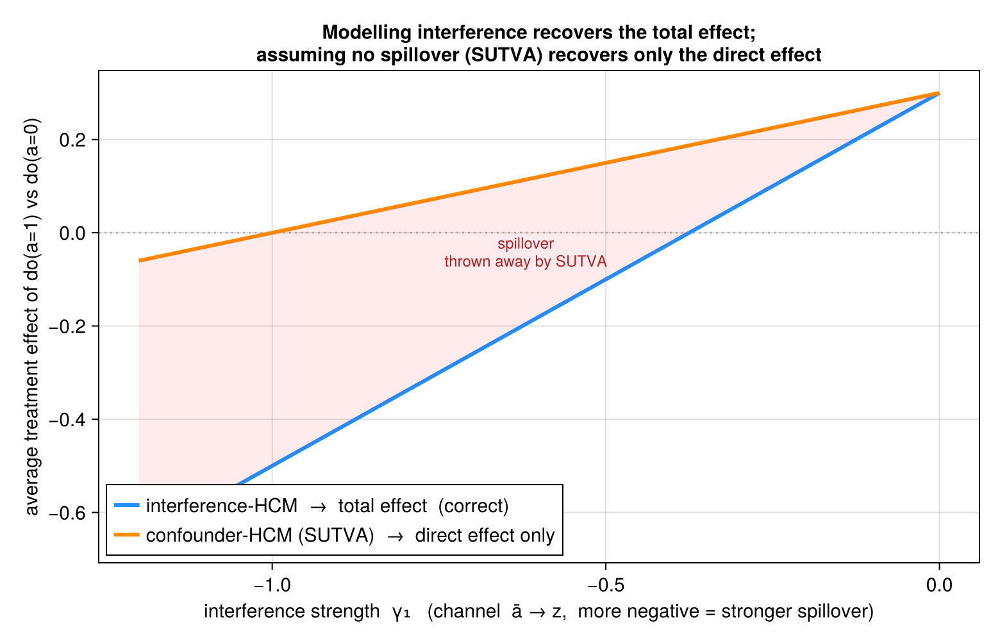

Interference vs. SUTVA
Most causal analyses assume no interference — one subunit's treatment does not affect another's outcome (part of SUTVA). When that fails, the policy-relevant effect of treating everyone is not the within-unit comparison those analyses estimate. This vignette shows what modelling the interference channel buys you, and what assuming it away costs.
The setup
In the confounder_interference data-generating process, each subunit's treatment $a_{ij}$ lifts the unit treatment rate $\bar a_i$, which drives a unit-level channel $z_i$ (e.g. school-wide class size, region-wide enforcement), which feeds back onto every subunit's outcome:
\[z_i = \gamma_0 + \gamma_1\,\bar a_i + \gamma_2\, s_i, \qquad y_{ij} = \mu_0 + u_i + \delta_0 z_i + (\mu_1 + \delta_1 z_i)\,a_{ij} + \varepsilon_{ij}.\]
\[\gamma_1\]
is the interference strength: how strongly the unit's treatment rate moves the channel. The policy question — what happens if we set everyone's treatment to 1? — has a total effect that runs through two paths: the direct $a_{ij}\to y_{ij}$, and the indirect $a_{ij}\to\bar a_i\to z_i\to y_{ij}$ that reaches all subunits.
The estimand is where the advantage lives
We do not need a simulation to see the gap — it is exact for this DGP. Setting the whole unit to $a^\star$ moves $\bar a_i$ to $a^\star$, so the channel shifts too; averaging the outcome over the induced channel gives the total effect. Holding the channel at its observed value (what an analysis that assumes no spillover does) gives only the direct effect:
\[\underbrace{\tau_{\text{total}}(\gamma_1) = \mu_1 + (\delta_0+\delta_1)\,\gamma_1}_{\textbf{interference-HCM target}} \qquad \underbrace{\tau_{\text{direct}}(\gamma_1) = \mu_1 + \delta_1\,p_a\,\gamma_1}_{\textbf{SUTVA confounder-HCM target}}\]
With the package defaults $\mu_1=0.3,\ \delta_0=0.2,\ \delta_1=0.6,\ p_a=0.5$ they coincide at $\gamma_1=0$ and fan apart linearly — the spillover $(\delta_0+p_a\delta_1)\gamma_1$ is exactly what the SUTVA analysis discards:
| $\gamma_1$ | interference-HCM (total) | SUTVA confounder-HCM (direct) | spillover gap |
|---|---|---|---|
| 0.0 | 0.300 | 0.300 | 0.000 |
| −0.3 | 0.060 | 0.210 | −0.150 |
| −0.6 | −0.180 | 0.120 | −0.300 |
| −0.9 | −0.420 | 0.030 | −0.450 |
| −1.2 | −0.660 | −0.060 | −0.600 |
At $\gamma_1=-0.8$ the SUTVA analysis reports a small positive effect (+0.06) when the true total effect is clearly negative (−0.34): strong enough interference flips the sign of the conclusion.

The blue line (interference-HCM) is the true total effect; the orange line (confounder-HCM, which assumes no spillover) tracks only the direct effect; the shaded wedge between them is the discarded spillover.
A note on naive aggregate OLS (regressing unit-mean $y$ on unit-mean $a$): we deliberately leave it off the figure. In this DGP treatment is randomized ($a \perp u$), so the aggregate slope happens to absorb the channel path and tracks the total effect — which would misleadingly suggest it is a sound method. It is not: with any confounding of treatment by $u$ it is biased, and the unit treatment rate barely varies under random assignment so it is poorly identified. The principled estimate of the total effect is the interference-HCM; the instructive contrast is interference-HCM versus the SUTVA confounder-HCM.
The estimators achieve these targets
The closed-form targets above are not just theory — the package's hierarchical-Bayes estimators recover them at adequate sample size. Fit both motifs to the same interference data at $\gamma_1=-0.8$ ($n=150$ units, $m=100$ subunits) and the interference-HCM lands on the total effect while the confounder-HCM lands on the direct effect:
Fit both motifs to the same interference data ($\gamma_1=-0.8$, $n=60$ units, $m=30$ subunits — the suite-verified recovering size) and read off the hard ATE:
using HCM, DataFrames, StatsModels, Statistics
sim = sim_hcm(:confounder_interference; n=60, m=30, seed=1) # γ1 = -0.8 (default)
# models the channel → TOTAL effect
fi = hcm(@formula(y ~ a), sim.data; unit=:unit, subunit=:subunit,
motif=:confounder_interference, interferer=:z, unit_covar=:s, iter=600, chains=2)
summarize_ate(ate(fi, Hard(1); baseline=Hard(0)))
# assumes no spillover (SUTVA) → DIRECT effect only
fc = hcm(@formula(y ~ a), sim.data; unit=:unit, subunit=:subunit, motif=:confounder,
iter=600, chains=2)
summarize_ate(ate(fc, Hard(1); baseline=Hard(0)))
sim.true_hard # the true total effectinterference-HCM (total): mean -0.199, 95% CI [-1.21, 0.42] # true total = -0.338, covered
confounder-HCM (direct): mean 0.112, 95% CI [0.083, 0.14] # the direct effect, misses spillover
sim.true_hard = -0.338The interference-HCM posterior covers the true total effect (−0.34) — wide, because the channel effect is hard to pin down with only 60 units — while the confounder-HCM posterior sits tightly near the direct effect (≈ 0.11). Those are the two ends of the wedge in the figure: assuming no spillover doesn't just lose precision, it targets the wrong estimand. The interference motif's recovery of true_hard is also exercised over the full DGP by the test_interference recovery test in the package suite; the runnable script is examples/interference_confirm.jl.
Takeaway
When treatment spills over through a unit-level channel, modelling the interference — letting the intervention propagate through $\bar a_i \to z_i$ — recovers the total, policy-relevant effect. Assuming no spillover (SUTVA), even with a correct within-unit confounding adjustment, silently estimates only the direct effect; the error is the spillover, and it grows with the interference strength until it can reverse the sign of the answer. The full, reproducible figure script is examples/interference_showcase.jl; the confirming fit is examples/interference_confirm.jl.